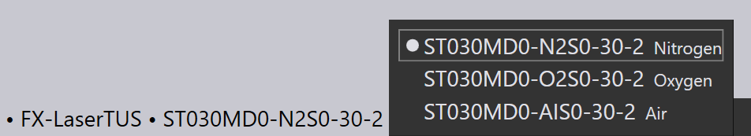

零件工作流程
切換到切割 CAM
現在，只需按下L鍵，即可對零件進行雷射切割。該零件透過_預設的_雷射加工設備執行裝備，即最近使用的雷射加工設備。切割路徑、進刀段、轉角加工和加工順序都設置好了，您應會看到這樣的結果：

底部的選項卡顯示該零件已為FX-LaserTUS機台執行裝備，並使用LTT（雷射製程資料表）ST030MD0-N2S0-30-2。
-
您可以點擊機台名稱並選擇一臺新機台，為不同的機台執行零件裝備。
-
您可以從所選的LTT中選擇不同的LTT用於所選機台、材料和厚度，方法是點擊LTT名稱並選擇其他名稱：

| 另請參閱工作流程面板，可按下W按鈕進行訪問。這可提供更多控制，以創建切割技術數據，以及透過折彎設置零件路徑和排樣的選項。 |
順序導航器
自動裝備器還計算雷射切割零件應採用的_順序_。當零件與其他零件一起插入到布局中時，也可以使用相同的零件內順序。您可以看到切割之間的_移動線_，方法是切換左側工具列上的Traverse設定（或使用X鍵）。


您還可以透過打開沿著視窗右側邊緣的順序導航器來_編輯_順序，方法是點擊選項卡下方的V形，或按下Z鍵。零件中的每個加工項目在順序導航器中都有一個條目，您可以透過拖放來移動這些項目來重新排序加工。您也可以在這裡進行一些其他操作，例如控制在移動到下一個輪廓之前工作頭是否抬起等等。順序導航器在佈局排序頁面進行更詳細的討論，在該頁面，我們使用導航器以查看和編輯整個佈局（包含多個零件的板材）的順序。